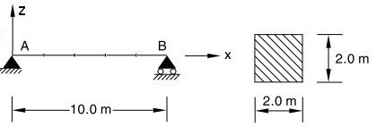
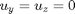
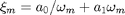
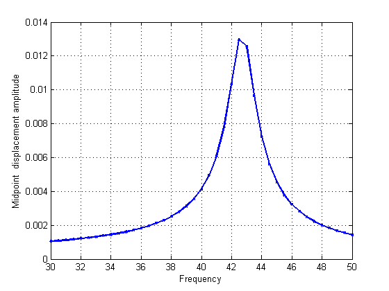
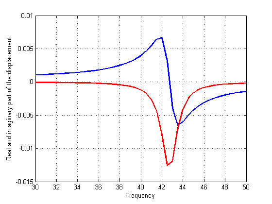
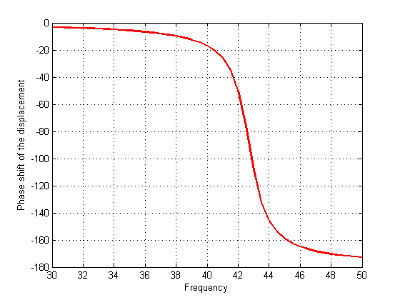

Steady-state harmonic vibration of a deep beam
Contents
Link to the m-file.
Description
This is a test recommended by the National Agency for Finite Element Methods and Standards (U.K.): Test 5 from NAFEMS “Selected Benchmarks for Forced Vibration,” R0016, March 1993.
The beam is going to be modeled as a three-dimensional solid, with solid elements. The beam geometry is given as

The beam is assumed to be simply supported in the transverse direction at both ends (). In the 3-D geometry this is implemented by attaching rollers in the direction of the axes perpendicular to the beam in both directions. Since the load has the requisite symmetries and it is transverse we will ignore the complexities due to the support conditions in the axial direction and the free axial rotation at .
Solution
The code is placed inside a Matlab function in order to be able to define the output nested function.
function pub_test5_vibration
Define the material properties.
pu=physical_units_struct;
% Parameters:
E = 200e3*pu.MEGA*pu.PA;
nu = 0.3;
rho= 8000*pu.KG/pu.M^3;
Define the geometry and the geometrical tolerance.
a=2.00*pu.M; b=2.00*pu.M; L= 10*pu.M;
tolerance =a/1000;
Define the damping characteristics. Damping ratio of 0.02 is taken the same for the two selected frequencies. The first is the lowest fundamental frequency, the second is the second flexural fundamental frequency.
zeta1= 0.02; zeta2 =0.02;
f1= 42.75; f2 = 149;
Create the mesh and initialize the geometry. Note that we are using 20-node hexahedra.
na= 2; nb= 2; nL =10;% How many elements in each direction? [fens,fes]= H20_block(L,a,b,nL,na,nb);% make the mesh % Shift the geometry so that the axis of the beam is along the % X-axis of the global coordinate system. fens = transform_apply(fens,@(x,d)(x-[0,a/2,b/2]), []);
Select the boundary faces for the application of the transverse load.
bfes= mesh_boundary(fes,[]);
topl =fe_select (fens,bfes,struct('box', [0,L,-Inf,Inf,b/2,b/2],...
'inflate',tolerance));
Now we will compose the model data.
clear model_data model_data.fens =fens; %this is the finite element node set
Create the physical property and the material objects.
prop=property_deformation_linear_iso(struct('E',E,'nu',nu,'rho',rho)); mater = material_deformation_linear_triax (struct('property',prop ));
Define the 3-D region of the beam. Note: we are creating a finite element machine object.
clear region region.femm= femm_deformation_linear(struct('fes',fes,... 'material',mater,... 'integration_rule',gauss_rule(struct('dim',3, 'order',3)))); model_data.region{1} =region;
Define the essential boundary conditions. At least one point needs to be restrained axially. Both cross-sections of the beam are supported by rollers. In the 3-D solid this will be accomplished by restraining translation in the direction of the support at all nodes in the cross-section.
clear essential essential.component= [1];% restrain the axial deformation essential.fixed_value= 0;%at this one point: [0,0,0] essential.node_list = [fenode_select(fens,... struct('box',[0,0,0,0,0,0],'inflate',tolerance))]; model_data.boundary_conditions.essential{1} = essential; clear essential essential.component= [2,3];%restrain both cross-sections with rollers essential.fixed_value= 0; essential.node_list = [... fenode_select(fens, struct('box', [0,0,-Inf,Inf,-Inf,Inf],... 'inflate',tolerance)),... fenode_select(fens, struct('box', [L,L,-Inf,Inf,-Inf,Inf],... 'inflate',tolerance))]; model_data.boundary_conditions.essential{2} = essential;
Define the traction load of 1 MN/m over the entire length of the beam on the top of the beam. This traction load has harmonic dependence but its distribution does not change as a function of frequency.
clear traction traction.traction = [0;0;1*pu.MEGA*pu.NT/b]; traction.fes= subset(bfes,topl); traction.integration_rule =gauss_rule(struct('dim',2, 'order',2)); model_data.boundary_conditions.traction{1} = traction;
Compute the parameters of Rayleigh damping. For the two selected frequencies we have the relationship between the damping ratio and the Rayleigh parameters

where  . Solving for the Rayleigh parameters yields:
. Solving for the Rayleigh parameters yields:
o1 =2*pi*f1; o2 =2*pi*f2;
Rayleigh_mass = 2*(o1*o2)/(o2^2-o1^2)*(o2*zeta1-o1*zeta2);% a0
Rayleigh_stiffness = 2*(o1*o2)/(o2^2-o1^2)*(-1/o2*zeta1+1/o1*zeta2);% a1
model_data.Rayleigh_mass =Rayleigh_mass;
model_data.Rayleigh_stiffness =Rayleigh_stiffness;
These are the frequencies at which to evaluate the frequency response function.
model_data.frequencies = 30: 0.5:50;
The function below will be called with each computed displacement from within the solver. The amplitude of the deflection at the midpoint in the direction of the load will be saved for each frequency.
midpoint=fenode_select (fens,... struct('box',[L/2 L/2 0 0 0 0],'inflate',tolerance)); midpointu = []; function output(f, model_data) Um=model_data.u.reshape(gather_values(model_data.u, midpoint)); midpointu= [midpointu Um(3)]; end model_data.observer =@output;
Call the steady-state vibration solver.
model_data =deformation_linear_steady_state_vibration(model_data);
The computed graph is displayed in this figure.
figure
plot(model_data.frequencies,abs(midpointu),...
'bx-','Markersize',3,'linewidth',2); hold on
xlabel( 'Frequency'),ylabel('Midpoint displacement amplitude')
grid on
 In this figure we show separately the real and imaginary part of the midpoint displacement.
figure;
plot( model_data.frequencies , real(midpointu),...
'Markersize',3,'linewidth',2); hold on
plot( model_data.frequencies , imag(midpointu),...
'r','Markersize',3,'linewidth',2); hold on
xlabel( 'Frequency'),
ylabel('Real and imaginary part of the displacement')
grid on
 In this figure we show the phase shift of the midpoint displacement.
figure;
plot( model_data.frequencies , ...
atan2(imag(midpointu),real(midpointu) )/pi*180,...
'r','Markersize',3,'linewidth',2); hold on
% set(gca,'ylim',[0,180])
xlabel( 'Frequency'),ylabel('Phase shift of the displacement')
grid on
 Discussion
The analytical model predicts the maximum amplitude at the midpoint of 0.01345 m at the frequency of 42.65 Hz.
The computational model comes relatively close. We obtain
[peak_amplitude, location] =max(abs(midpointu));
peak_amplitude
peak_amplitude =
0.0130
at the frequency of
model_data.frequencies(location)
ans = 42.5000
So the amplitude is predicted with an error of less than 4%, at a frequency which is predicted with an error of less than 1%. Note that the accuracy of the prediction depends critically on the fineness of the sampling of frequencies around the peak in the frequency transfer function. For finer spacing of frequencies we could improve the peak amplitude estimate considerably.
For instance, using these frequencies to construct the frequency response function ...
model_data.frequencies = 40: 0.05:45;
... and calling again the steady-state vibration solver...
midpointu = [];% Note that we need to clear the array to hold the results
model_data =deformation_linear_steady_state_vibration(model_data);
... we obtain the improved estimate of the peak amplitude...
[peak_amplitude, location] =max(abs(midpointu));
peak_amplitude
peak_amplitude =
0.0133
... at the frequency of
model_data.frequencies(location)
ans = 42.7000
end